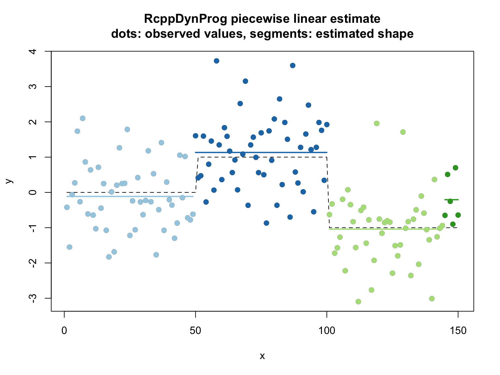
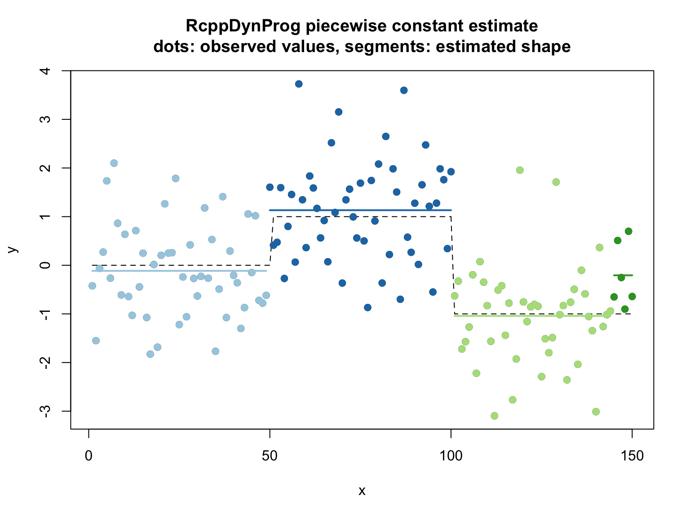

In this example we fit a piecewise constant function to example data.
Please see here for a discussion of the methodology.
library("RcppDynProg")
set.seed(2018)
g <- 50
d <- data.frame(
x = 1:(3*g)) # ordered in x
d$y_ideal <- c(rep(0, g), rep(1, g), rep(-1, g))
d$y_observed <- d$y_ideal + rnorm(length(d$y_ideal))
# plot
plot(d$x, d$y_observed,
xlab = "x", ylab = "y",
main = "raw data\ncircles: observed values, dashed line: unobserved true values")
lines(d$x, d$y_ideal,
type = "l",
lty = "dashed")As a heuristic, we set our regularization penalty to a value that treats permuted data (no relation between x and y) as a single partition.
y_permuted <- d$y_ideal[sample.int(nrow(d), nrow(d), replace = FALSE)]
solve_with_penalty <- function(ycol, penalty) {
n <- length(ycol)
indices = seq_len(n)
x <- const_costs(ycol, 1+numeric(n), 1, indices)
x <- x + penalty
solve_interval_partition(x, n)
}
lb <- 1
ub <- 10
while(length(solve_with_penalty(y_permuted, ub))>2) {
ub <- ub*2
}
while(TRUE) {
mid <- ceiling((ub+lb)/2)
if(mid>=ub) {
break
}
si <- solve_with_penalty(y_permuted, mid)
if(length(si)<=2) {
ub <- mid
} else {
lb <- mid
}
}
print(ub)## [1] 5We now use this penalty to segment the data. Notice we recover the actual problem structure.
soln <- solve_with_penalty(d$y_observed, ub)
print(soln)## [1] 1 50 101 151d$group <- as.character(findInterval(d$x, soln))
group_means <- tapply(d$y_observed, d$group, mean)
d$group_mean <- group_means[d$group]
d$estimate <- d$group_mean
print(sum((d$y_observed - d$y_ideal)^2))## [1] 151.876## [1] 2.973557# plot
d$group <- as.character(d$group)
plot(d$x, d$y_observed,
xlab = "x", ylab = "y",
main = "RcppDynProg piecewise linear estimate\ndots: observed values, segments: estimated shape")
points(d$x, d$y_ideal,
type = "l",
lty = "dashed")
cmap <- c("#a6cee3",
"#1f78b4",
"#b2df8a",
"#33a02c",
"#fb9a99",
"#e31a1c",
"#fdbf6f",
"#ff7f00",
"#cab2d6",
"#6a3d9a",
"#ffff99",
"#b15928")
names(cmap) <- as.character(seq_len(length(cmap)))
points(d$x, d$y_observed, col = cmap[d$group], pch=19)
groups <- sort(unique(d$group))
for(gi in groups) {
di <- d[d$group==gi, , drop = FALSE]
lines(di$x, di$estimate, col = cmap[di$group[[1]]], lwd=2)
}
The same solution through the more succinct solve_for_partitionc() interface.
# x_cuts <- solve_for_partition(d$x, d$y_observed)
# sometimes a different penalty due to problem chunking
x_cuts <- solve_for_partitionc(d$x, d$y_observed, penalty = ub)
print(x_cuts)## x pred group what
## 1 1 -0.1147501 1 left
## 2 49 -0.1147501 1 right
## 3 50 1.1321951 2 left
## 4 100 1.1321951 2 right
## 5 101 -0.9412289 3 left
## 6 150 -0.9412289 3 rightd$estimate <- approx(x_cuts$x, x_cuts$pred, xout = d$x, method = "constant", rule = 2)$y
d$group <- as.character(findInterval(d$x, x_cuts[x_cuts$what=="left", "x"]))
print(sum((d$y_observed - d$y_ideal)^2))## [1] 151.876## [1] 2.973557## [1] 147.9564# plot
d$group <- as.character(d$group)
plot(d$x, d$y_observed,
xlab = "x", ylab = "y",
main = "RcppDynProg piecewise constant estimate\ndots: observed values, segments: estimated shape")
points(d$x, d$y_ideal,
type = "l",
lty = "dashed")
cmap <- c("#a6cee3",
"#1f78b4",
"#b2df8a",
"#33a02c",
"#fb9a99",
"#e31a1c",
"#fdbf6f",
"#ff7f00",
"#cab2d6",
"#6a3d9a",
"#ffff99",
"#b15928")
names(cmap) <- as.character(seq_len(length(cmap)))
points(d$x, d$y_observed, col = cmap[d$group], pch=19)
groups <- sort(unique(d$group))
for(gi in groups) {
di <- d[d$group==gi, , drop = FALSE]
lines(di$x, di$estimate, col = cmap[di$group[[1]]], lwd=2)
}